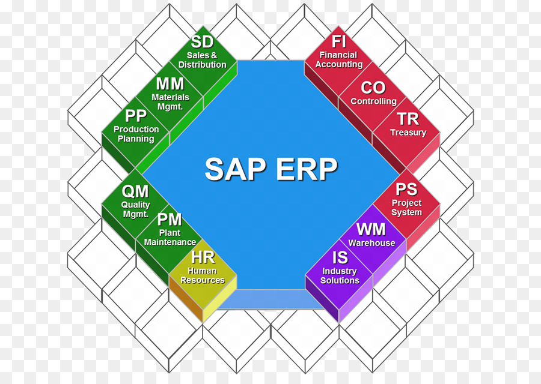

İstatistikler & Proje Galerisi
| Alan Adı | Gerekli Temel Yetkinlik | Sektör Talebi | Ortalama Başlangıç Puanı |
|---|---|---|---|
| VERİ BİLİMİ | SQL & Python Veri Analizi | Çok Yüksek | 8.5 / 10 |
| İstatistik & Makine Öğrenmesi | Yüksek | 9.0 / 10 | |
| SAP Danışmanlığı | ERP Modül Bilgisi & Süreç Yönetimi | Çok Yüksek | 8.8 / 10 |
| Genel Değerlendirme: Her iki alan da MIS mezunları için en yüksek istihdam oranına sahiptir. Genel: 8.7 | |||
Proje Çalışmalarımdan Kesitler
SAP VE ERP

SAP Nedir? En Çok Kullanılan SAP Modülleri (2026 Güncel Rehber)
Bu yazıda; SAP’nin ne olduğunu, neden tercih edildiğini ve 2026’da en çok kullanılan 8 SAP modülünü (FI, CO, SD, MM, PP, WM, HR, ABAP) detaylı şekilde öğreneceksiniz. Ayrıca hangi modülün size uygun olduğuna dair karar tablosu da bulacaksınız.
Giriş: SAP Nedir ve Neden Bu Kadar Önemli?
SAP nedir? Kısaca, SAP (Systems, Applications & Products in Data Processing), şirketlerin finans, satın alma, satış, üretim, lojistik, depo yönetimi insan kaynakları gibi tüm temel iş süreçlerini tek bir çatı altında yönetmesini sağlayan bir kurumsal kaynak planlama (ERP) yazılımıdır. SAP nedir ne işe yarar sorusunun en net cevabı şudur: Veri karmaşasını ortadan kaldırarak gerçek zamanlı raporlama sunar.
1972 yılında Almanya’da beş eski IBM çalışanı tarafından kurulan SAP, günümüzde dünyanın en büyük ERP yazılım şirketi haline gelmiştir. 200’e yakın ülkede 300.000’den fazla müşterisi bulunan SAP, özellikle büyük ve orta ölçekli işletmelerin vazgeçilmez çözüm ortağıdır. SAP ile ERP arasındaki fark ise şudur: ERP bir kavramdır, SAP ise bu kavramı hayata geçiren bir yazılım markasıdır.
Türkiye’de ise 2001 yılından beri faaliyet gösteren SAP, onlarca sektörde yüz binlerce kullanıcı tarafından aktif olarak kullanılmaktadır.
Neden SAP Kullanmalısınız? 5 Temel Avantaj ve 1 Kritik Dezavantaj
İşletmelerin SAP’yi tercih etmesinin ardında yatan 5 temel neden şunlardır:
- Tek Platform, Tam Entegrasyon: Şirketler genellikle farklı iş süreçleri için ayrı yazılımlar kullanır. Bu durum veri uyumsuzluğu, tekrar eden işler ve zaman kaybına yol açar. SAP, tüm modülleri aynı veritabanı üzerinde birleştirerek bu sorunu ortadan kaldırır.
- Güvenilirlik ve Veri Güvenliği: SAP, yetkisiz erişim ve veri sızıntısına karşı katı güvenlik duvarlarına sahiptir. Özellikle finansal verilerin korunması gereken bankacılık, sigorta ve kamu sektöründe tercih edilir.
- Esneklik ve Özelleştirilebilirlik: Her modül, firmanın ihtiyacına göre özelleştirilebilir. Küçük bir imalat atölyesinden dev bir lojistik firmasına kadar her ölçeğe uygun çözüm sunar.
- Hızlı ve Veriye Dayalı Karar Alma: SAP sayesinde yöneticiler, anlık satış rakamlarından stok seviyelerine, nakit akışından üretim verimliliğine kadar tüm kritik verileri tek ekrandan görebilir. Bu da daha hızlı ve doğru kararlar alınmasını sağlar.
- Maliyet ve Zaman Tasarrufu: Tek bir yazılım ekibi, tek bir altyapı ve tek bir veri tabanı. SAP, iş süreçlerini otomatikleştirerek iş gücü ve operasyonel maliyetleri ciddi oranda düşürür.
Dezavantajları da Var mı?
Elbette. SAP’nin en büyük dezavantajları yüksek lisans ücretleri, uzun ve maliyetli uygulama süreçleri ile uzman danışman bulma zorluğudur. KOBİ’ler için bütçe dostu olmayabilir. Ayrıca, sistemin özelleştirilmesi (customizing) uzmanlık gerektirir ve yanlış yapılandırma iş süreçlerini olumsuz etkileyebilir.
En Çok Kullanılan SAP Modülleri Hangileridir?
SAP’nin gücü, modüler yapısından gelir. İşte en çok kullanılan SAP modülleri ve görevleri:
SAP Modülleri Nelerdir?
SAP FI (Financial Accounting – Finansal Muhasebe)
Ne işe yarar? Şirketlerin dış raporlamaya yönelik tüm finansal işlemlerini (bilanço, gelir tablosu, alacak-borç, defteri kebir) yönetir.
Kim kullanır? Muhasebe birimi, finans direktörleri, mali işler uzmanları.
SAP CO (Controlling – Yönetim Muhasebesi)
Ne işe yarar? FI’dan farklı olarak iç raporlamaya odaklanır. Maliyet merkezleri, karlılık analizi, ürün maliyetlendirmesi, yatırım değerlendirmesi yapar.
Kim kullanır? Maliyet muhasebecileri, finansal kontrolörler.
SAP SD (Sales & Distribution – Satış ve Dağıtım)
Ne işe yarar? Sipariş girişinden sevkiyata, fiyatlandırmadan faturalamaya kadar satış süreçlerini yönetir.
Kim kullanır? Satış ekibi, lojistik uzmanları, müşteri temsilcileri.
SAP MM (Materials Management – Malzeme Yönetimi)
Ne işe yarar? Satın alma, stok yönetimi, malzeme ihtiyaç planlaması, tedarikçi değerlendirmesi.
Kim kullanır? Satın alma birimi, depo sorumluları, lojistik yöneticileri.
SAP PP (Production Planning – Üretim Planlama)
Ne işe yarar? Üretim emirleri, kapasite planlaması, malzeme listesi (BOM), iş emri yönetimi.
Kim kullanır? Üretim planlama uzmanları, operasyon yöneticileri.
SAP WM (Warehouse Management – Depo Yönetimi)
Ne işe yarar? Raf yönetimi, sevkiyat hazırlığı, transfer emirleri, stok hareketleri.
Kim kullanır? Depo çalışanları, lojistik koordinatörleri.
SAP HR (İnsan Kaynakları)
Ne işe yarar? Personel yönetimi, bordro, yetenek yönetimi, performans değerlendirme, öğrenme yönetimi.
Kim kullanır? İK uzmanları, işe alım sorumluları.
Hangi SAP Modülünü Seçmelisiniz? (Hızlı Karar Tablosu)
| İş Süreci / Odak Alanı | Önerilen Modül | Öncelikli Sektörler |
|---|---|---|
| Finansal raporlama + iç kontrol | FI + CO (FICO) | Tüm sektörler |
| Satış siparişi yönetimi | SD | Perakende, toptan satış, e-ticaret |
| Satın alma ve stok takibi | MM | İmalat, lojistik, inşaat, sağlık |
| Üretim planlama | PP | Otomotiv, makine, gıda, tekstil |
| Depo operasyonu | WM | Lojistik, e-ticaret, 3PL firmalar |
Sık Sorulan Sorular (SSS)
- Bir uzmanlık alanı seçin (FI, MM, SD gibi)
- Ardından SAP eğitimi veren kurumlarla iletişime geçin (Metaverse Bilişim gibi)
- Dilerseniz SAP’ın resmi sertifikasyon sınavlarına da hazırlanabilirsiniz. (Sınav girişi ücretlidir, SAP’ın resmi sitesinden bilgilere ulaşabilirsiniz)
VERİ BİLİMİ PROJESİ
1. Projenin Amacı ve İş Problemi
Bu projede, bir şirketin mevcut müşterilerinin hizmeti bırakma (terk etme) eğilimlerini önceden tahmin edebilecek bir veri bilimi çözümü geliştirdim. Şirketler için yeni müşteri kazanmanın maliyeti, mevcut müşteriyi tutmaktan çok daha yüksektir. Ben de bu yönetimsel problemi çözmek adına, veri odaklı bir erken uyarı sistemi kurmayı hedefledim.
2. Veri Seti ve Ön İşleme (Data Preprocessing)
Çalışmamda, müşterilerin demografik bilgilerini, hesap hareketlerini, harcama sıklıklarını ve müşteri hizmetleriyle olan etkileşim verilerini içeren bir veri seti kullandım. Ham veri üzerinde şu adımları uyguladım:
- Eksik (Missing) ve aykırı (Outlier) değerleri tespit edip temizledim.
- Kategorik değişkenleri makine öğrenmesi modellerinin anlayabileceği formata getirmek için One-Hot Encoding yöntemini uyguladım.
- Sürekli değişkenleri (harcama tutarları, üyelik süresi vb.) standartlaştırmak için veriyi ölçeklendirdim.
3. Veri Analizi ve Model Geliştirme
Öncelikle verinin karakteristiğini anlamak için Keşifçi Veri Analizi (EDA) yaparak korelasyon matrislerini inceledim. Hangi müşteri davranışlarının terke daha çok zemin hazırladığını görselleştirdim. Model aşamasında ise birden fazla algoritmayı yarıştırdım:
- Lojistik Regresyon: Temel bir başarı oranı yakalamak (Baseline) için kullandım.
- Rastgele Orman (Random Forest) ve XGBoost: Sektörde bu tarz problemlerde en yüksek performansı veren bu ensemble (topluluk) algoritmalarını kurdum ve hiperparametre optimizasyonu (Hyperparameter Tuning) yaptım.
4. Proje Sonuçları ve Başarı Metrikleri
Sınıflandırma modelimi değerlendirirken sadece doğruluğa (Accuracy) değil, bizim için asıl kritik olan terk edecek müşterileri kaçırmamak adına Recall (Duyarlılık) ve F1-Score metriklerine odaklandım.
Geliştirdiğim nihai model, terk etme eğiliminde olan müşterileri %86 doğrulukla önceden tahmin etmeyi başardı. Bu sayede pazarlama ekibinin, sistemin "terk edebilir" olarak etiketlediği kişilere özel kampanyalar düzenlemesine olanak sağlandı.
5. Bu Projenin Bana Kattıkları
Bu çalışma bana sadece kod yazmayı değil, Yönetim Bilişim Sistemleri disiplininin özü olan "teknik çözümleri iş hedeflerine dönüştürme" vizyonunu kazandırdı. Ham veriden yola çıkarak bir şirketin finansal kayıplarını azaltabilecek uçtan uca bir veri bilimi boru hattı (pipeline) tasarlamayı ve analitik düşünmeyi öğrendim.